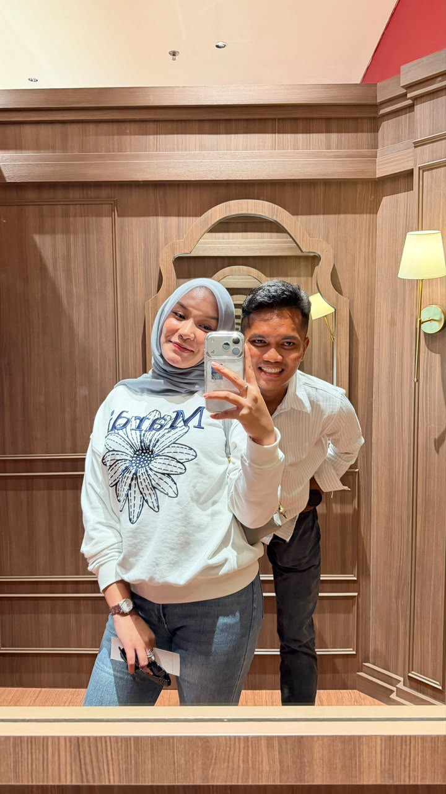
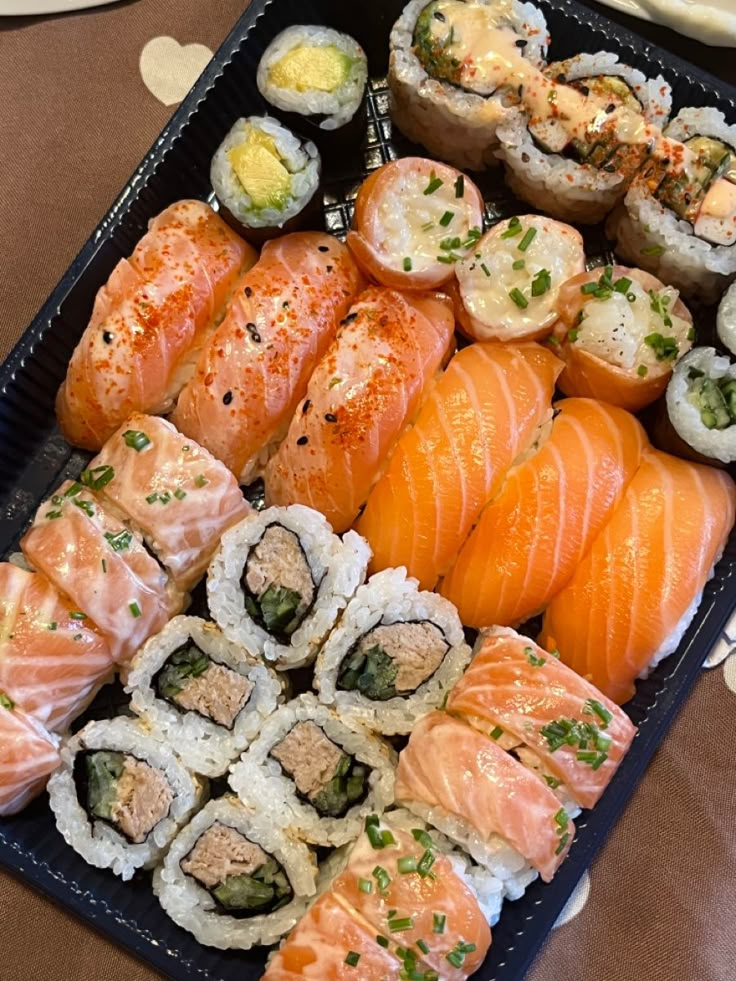
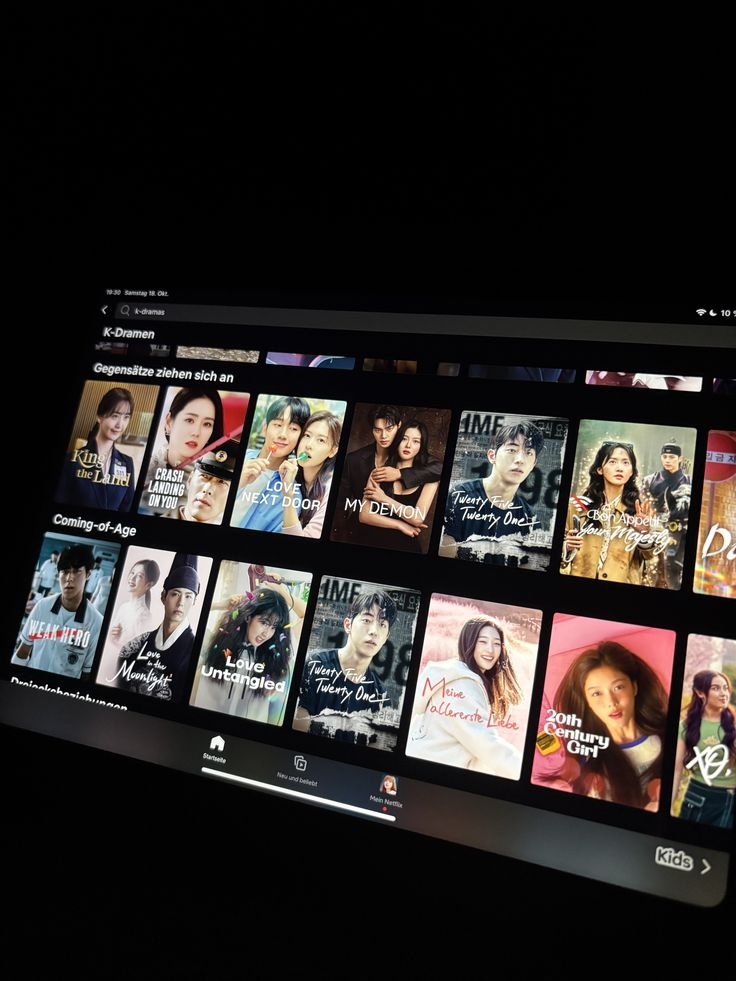
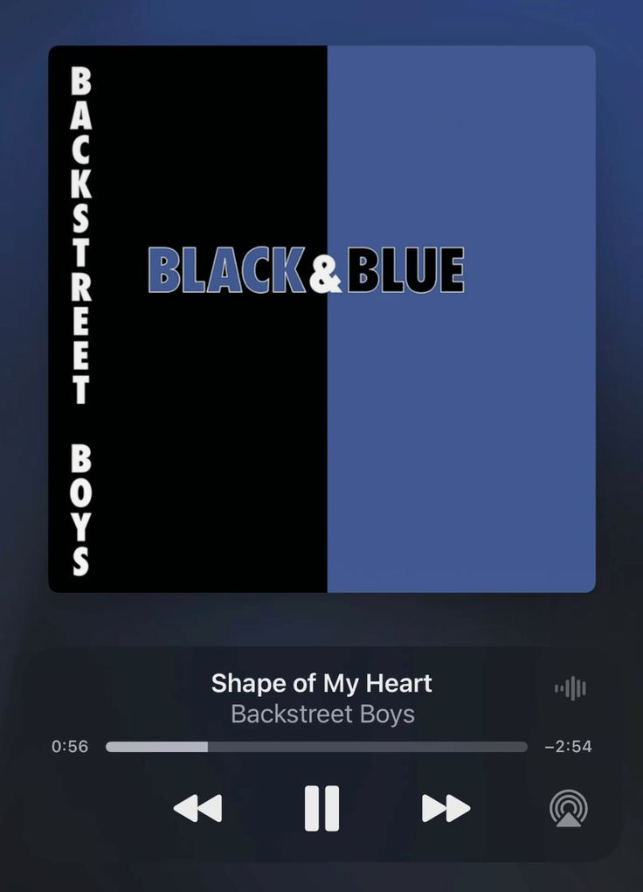
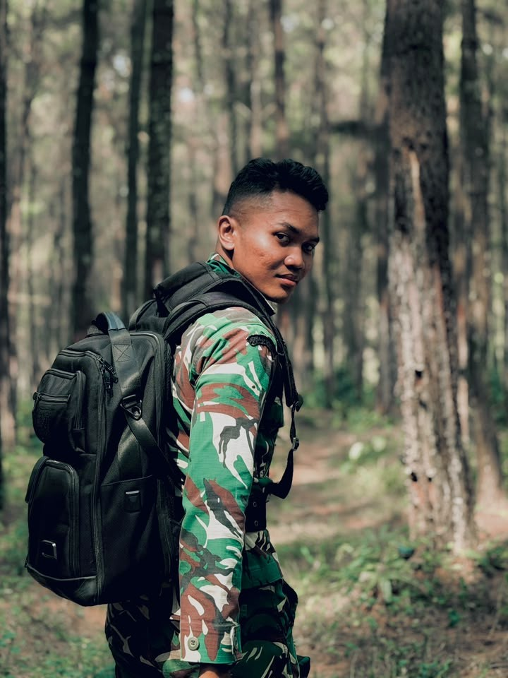
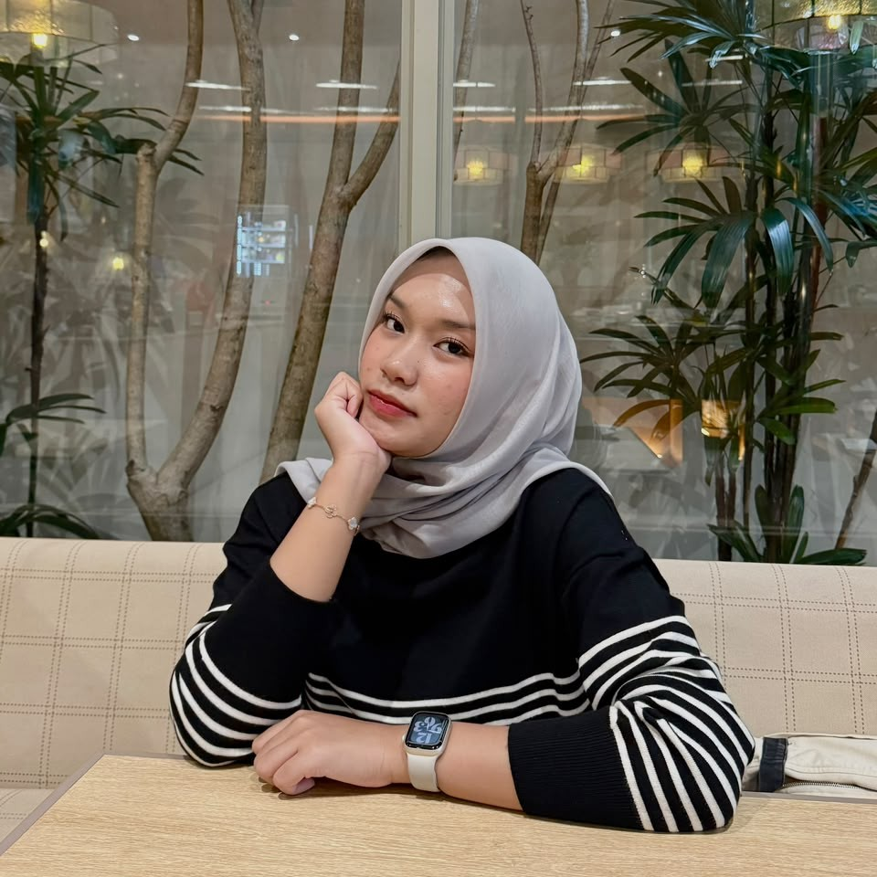
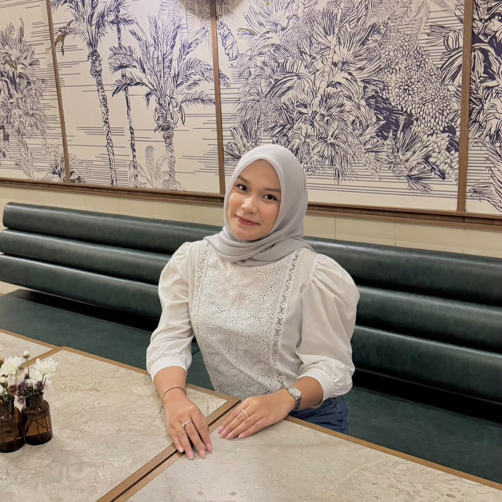
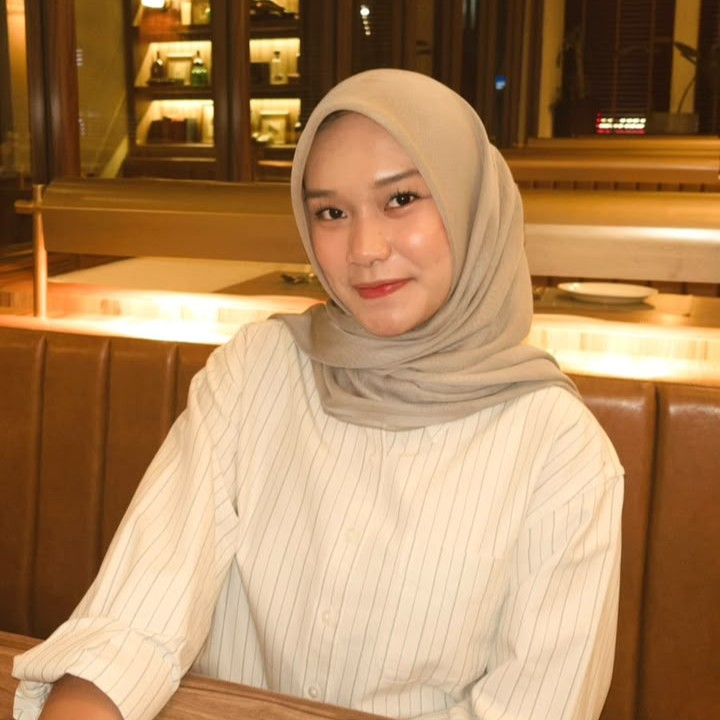

2
2nh
♥♥♥♥♥♥
🌹💍🌹💍🌹

Until I Found You
Stephen Sanchez
klik disini


Your favorite food

Your favorite drink

Your favorite movie time

Your favorite song

Your favorite person

You

Are

The Most

Beautiful Girl

In My Mine